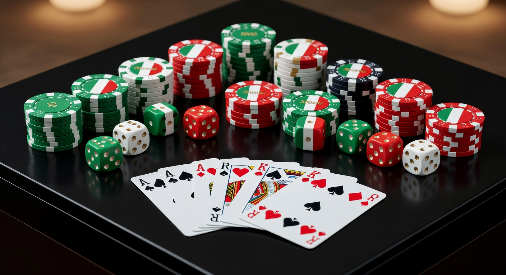
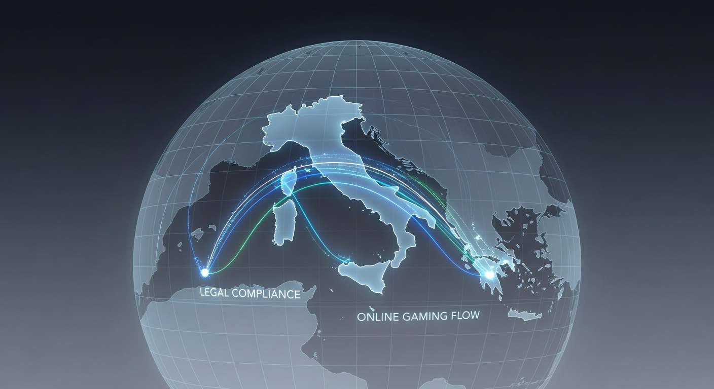
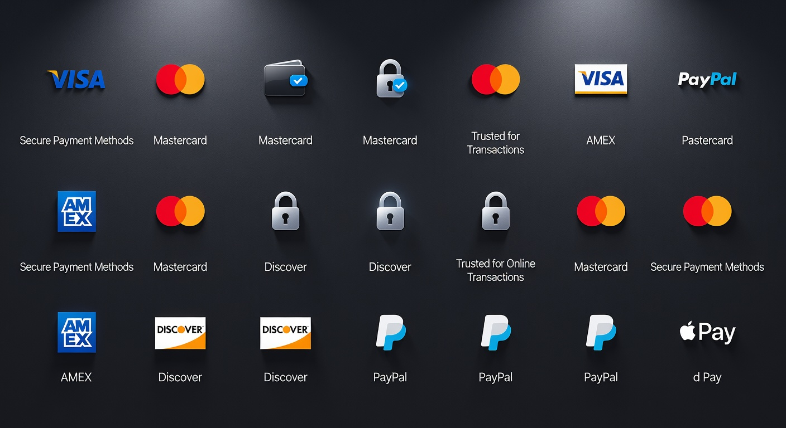

Casino Malta Online: Guida ai Migliori Siti con Licenza MGA 2026
Il panorama del gioco d'azzardo digitale ha subito trasformazioni radicali negli ultimi anni, e nel 2026 la ricerca di un casino malta online di qualità rimane una priorità per gli appassionati italiani. La giurisdizione maltese è da tempo considerata l'hub europeo del gaming, offrendo standard di sicurezza che rivaleggiano con le normative più stringenti a livello globale. Molti utenti cercano piattaforme che sappiano coniugare innovazione tecnologica e protezione del consumatore, elementi che i portali con licenza MGA garantiscono costantemente.
Scegliere un casino malta online significa affidarsi a operatori che operano sotto l'egida della malta gaming authority, un ente che non concede licenze con facilità. Nel corso di questo 2026, abbiamo assistito all'introduzione di nuovi protocolli di crittografia e sistemi di intelligenza artificiale per il monitoraggio del comportamento di gioco, rendendo l'esperienza di navigazione e scommessa estremamente fluida. La competitività del mercato ha inoltre spinto questi siti a offrire cataloghi di giochi sempre più vasti e bonus strutturati in modo trasparente.
In questa guida approfondita, esploreremo ogni aspetto tecnico e legale riguardante il casino malta online, analizzando perché queste piattaforme continuino a essere la scelta prediletta rispetto ad altre opzioni internazionali. Vedremo come la convergenza tra tecnologia blockchain e normative europee stia plasmando il futuro del settore, garantendo prelievi istantanei e una correttezza dei software certificata da enti terzi indipendenti.
Perché scegliere un operatore con licenza maltese?
Optare per un casino malta online nel 2026 offre garanzie che vanno ben oltre la semplice varietà di slot machine o tavoli di blackjack. La licenza rilasciata dalla malta gaming è sinonimo di stabilità finanziaria dell'operatore, il che assicura che i fondi dei giocatori siano sempre protetti e separati dai conti operativi dell'azienda. Questo livello di segregazione dei fondi è un pilastro fondamentale per chiunque desideri giocare con serenità.
La trasparenza è un altro fattore determinante: ogni casino malta online deve esporre chiaramente le probabilità di vincita e utilizzare algoritmi RNG (Random Number Generator) regolarmente testati. Nel 2026, la tecnologia di verifica è diventata ancora più sofisticata, permettendo audit in tempo reale che assicurano l'integrità di ogni singola sessione. Inoltre, la vicinanza normativa all'Unione Europea facilita la risoluzione di eventuali dispute legali tra l'utente e il fornitore dei servizi.
Molti giocatori prediligono il casino malta online anche per la flessibilità dei limiti di deposito e scommessa, che pur rimanendo sotto controllo per prevenire il gioco d'azzardo patologico, offrono una libertà maggiore rispetto ad altri mercati regolamentati in modo più rigido. La qualità del servizio clienti, solitamente disponibile 24/7 e in più lingue, completa un pacchetto di servizi orientato all'eccellenza che difficilmente si trova in operatori con licenze meno prestigiose.
Classifica dei migliori casinò online di Malta per l'Italia

La selezione di un casino malta online affidabile richiede un'analisi comparativa dei servizi offerti, della velocità dei pagamenti e della reputazione consolidata nel tempo. Nel 2026, il mercato si è consolidato attorno ad alcuni brand che hanno dimostrato una resilienza straordinaria e una capacità d'innovazione costante. Questi operatori non solo rispettano i canoni della gaming authority, ma superano spesso le aspettative in termini di user experience.
| Brand | Vantaggio Principale | Bonus di Benvenuto | Link Ufficiale |
|---|---|---|---|
| Millioner | Programma VIP esclusivo | 100% fino a 1500€ + 200 FS | Visita Millioner |
| Roulettino | Migliore offerta Live Casino | Bonus Cashback settimanale 25% | Visita Roulettino |
| Wyns | Slot machine in esclusiva | Pacchetto fino a 2000€ sui primi 3 depositi | Visita Wyns |
| Kinbet | Integrazione Scommesse e Casino | Bonus 100% + Scommessa gratuita 50€ | Visita Kinbet |
| Dragonia | Gamification e Missioni | Bonus senza deposito 20€ + 100% | Visita Dragonia |
Tra le opzioni più interessanti del 2026, spicca anche il VegasHero Casinò, noto per la sua interfaccia futuristica e la velocità di caricamento dei giochi da mobile. Allo stesso modo, portali come Astromania Casinò hanno saputo conquistare una fetta di mercato importante grazie a tornei quotidiani con montepremi elevati. Ogni casino malta online presente in questa lista è stato testato per garantire che i tempi di prelievo siano inferiori alle 24 ore per i portafogli elettronici.
1. Analisi delle piattaforme più sicure
Quando analizziamo la sicurezza di un casino malta online, guardiamo prima di tutto alla crittografia dei dati. Nel 2026, lo standard minimo è rappresentato dal protocollo TLS 1.3, che assicura che ogni transazione finanziaria sia inattaccabile. Brand come Boomerangbet Casino implementano inoltre l'autenticazione a due fattori (2FA) per tutti gli account, un passo necessario per proteggere l'identità digitale degli utenti.
Un altro aspetto cruciale è la gestione della privacy. Un casino malta online d'eccellenza deve essere conforme al GDPR, garantendo che i dati personali non vengano ceduti a terzi senza un esplicito consenso. La trasparenza nei termini e condizioni, spesso un punto dolente in passato, è oggi un requisito fondamentale per mantenere la licenza della malta gaming authority, portando a contratti di gioco più chiari e meno ambigui.
2. Bonus di benvenuto e promozioni ricorrenti
L'offerta promozionale in un casino malta online nel 2026 è diventata molto più sofisticata. Non si tratta solo del classico bonus di benvenuto, ma di sistemi di ricompensa dinamici che si adattano allo stile di gioco dell'utente. Ad esempio, il sistema Bonus Crab è diventato popolarissimo, permettendo ai giocatori di ottenere premi extra attraverso mini-giochi interattivi che aggiungono un livello di divertimento ulteriore alla sessione di scommessa.
Le promozioni ricorrenti sono il vero valore aggiunto di siti come Diva Spin Casinò o Lunubet Casinò. Questi operatori offrono bonus ricarica nel weekend, programmi fedeltà basati su livelli di esperienza e cashback che ammortizzano le eventuali perdite. Un buon casino malta online si riconosce dalla ragionevolezza dei requisiti di scommessa (wagering), che nel 2026 tendono a essere più bassi e trasparenti rispetto agli anni precedenti, permettendo una conversione del bonus in saldo reale più agevole.
3. Varietà del catalogo giochi e scommesse
L'offerta ludica di un casino malta online moderno è sterminata. Collaborando con software provider di calibro mondiale come NetEnt, Evolution Gaming e Pragmatic Play, queste piattaforme offrono migliaia di slot machine, dai classici tre rulli alle moderne video slot con migliaia di linee di pagamento. Il casino malta online contemporaneo non trascura però i giochi da tavolo, offrendo decine di varianti di Roulette, Baccarat e Poker, spesso disponibili anche in modalità demo gratuita.
La sezione dal vivo è dove il casino malta online brilla maggiormente nel 2026. Grazie allo streaming in 4K e alla realtà aumentata, portali come WinBet offrono un'esperienza immersiva che trasporta il giocatore direttamente in una sala da gioco reale. L'integrazione con le scommesse sportive, tipica di operatori come 888Casino, permette inoltre di gestire un unico portafoglio per puntare su eventi calcistici, tennis o eSports, rendendo l'esperienza di intrattenimento a 360 gradi.
La storia della Malta Gaming Authority (MGA)
Per comprendere l'importanza di un casino malta online, è fondamentale guardare all'evoluzione del suo ente regolatore. Fondata all'inizio degli anni 2000, la MGA è stata una delle prime istituzioni al mondo a regolamentare il gioco d'azzardo a distanza. Nel corso di due decenni, ha saputo adattarsi ai cambiamenti tecnologici, trasformando Malta nel cuore pulsante dell'industria del gioco d'azzardo in Europa, attirando investimenti e talenti da ogni parte del globo.
Il successo del casino malta online è intrinsecamente legato alla reputazione di serietà costruita dalla MGA. L'autorità ha introdotto standard rigorosi per il software e la protezione dei minori, diventando un modello per molte altre nazioni. Nel 2026, la malta gaming authority continua a essere all'avanguardia, integrando nelle sue direttive l'uso etico dell'intelligenza artificiale e promuovendo l'adozione di standard di gioco responsabile sempre più efficaci per contrastare le dipendenze.
Molti operatori storici hanno mosso i primi passi proprio grazie a questa giurisdizione. La crescita esponenziale del settore online di malta ha portato a una maturazione del mercato dove la qualità del servizio è diventata il principale driver di scelta. Oggi, un casino malta online non è solo un sito di scommesse, ma un'entità aziendale solida che contribuisce significativamente al PIL dell'isola e garantisce un ambiente protetto per milioni di utenti internazionali, inclusi moltissimi italiani.
Legalità dei siti non AAMS maltesi nel mercato italiano

Un tema molto discusso riguarda la posizione legale di un casino malta online rispetto alla normativa italiana gestita dall'ADM (ex AAMS). È importante chiarire che, sebbene lo Stato Italiano favorisca gli operatori con licenza nazionale, le piattaforme maltesi operano legalmente all'interno del mercato unico europeo. Secondo i principi di libera prestazione dei servizi stabiliti dai trattati UE, un casino malta online può offrire i propri servizi ai cittadini europei, a patto di rispettare le direttive comunitarie sulla sicurezza e la trasparenza.
Nel 2026, la cooperazione tra le autorità europee è aumentata, riducendo le zone d'ombra. Giocare su un casino malta online non è un reato per l'utente, ma è fondamentale scegliere siti che dimostrino di avere misure di protezione adeguate. Molti giocatori italiani scelgono il casinò non aams di Malta proprio per l'assenza di alcune limitazioni burocratiche italiane, pur mantenendo un livello di sicurezza paragonabile o talvolta superiore grazie alla rigorosa sorveglianza della MGA.
La distinzione principale risiede nel regime fiscale e nelle procedure di registrazione. Mentre i siti ADM sono strettamente interconnessi con l'anagrafe tributaria italiana, un casino malta online segue le direttive maltesi, offrendo spesso una maggiore privacy. Tuttavia, è bene ricordare che l'accettazione di giocatori residenti in Italia da parte di un casino malta online deve avvenire nel rispetto delle normative vigenti, e la maggior parte dei grandi brand internazionali si è adeguata implementando filtri e controlli specifici per il mercato nostrano.
Differenze tra licenza ADM e licenza MGA
La principale differenza tra un operatore ADM e un casino malta online risiede nell'approccio alla regolamentazione. L'ADM tende a essere molto prescrittiva sulla tipologia di scommesse e sulle tempistiche di gioco, mentre la MGA punta maggiormente sulla responsabilità dell'operatore e sulla qualità tecnologica. Un casino malta online offre solitamente un palinsesto più ampio, includendo varianti di gioco che potrebbero non essere ancora approvate in Italia, come alcuni giochi in realtà virtuale o sistemi di scommesse innovative.
In termini di tassazione, i siti ADM pagano le tasse direttamente in Italia, e le vincite sono già al netto delle imposte. Per chi gioca su un casino malta online, la situazione può essere diversa a seconda degli accordi bilaterali e della natura della vincita. È sempre consigliabile consultare un esperto per quanto riguarda la dichiarazione dei redditi nel 2026, anche se la tendenza europea è verso una tassazione alla fonte che semplifica la vita al giocatore finale, indipendentemente dalla sede dell'operatore di gioco d'azzardo.
Come verificare l'autenticità di una licenza di Malta
Non tutti i siti che dichiarano di essere un casino malta online lo sono effettivamente. Per evitare truffe, è essenziale verificare il numero di licenza direttamente sul portale ufficiale della malta gaming authority. Ogni operatore legittimo deve esporre il logo MGA nel footer del sito; cliccando su di esso, si dovrebbe essere reindirizzati a una pagina di validazione dinamica che conferma lo stato "Authorized" della licenza e riporta l'indirizzo web corretto del sito.
Un vero casino malta online fornisce informazioni trasparenti sulla società madre, con sede fisica nell'isola. Se un sito appare ambiguo o non fornisce un link verificabile alla MGA, è meglio diffidare. Nel 2026, sono emersi alcuni siti "clone" che imitano l'estetica di brand famosi come Wonderluck Casinò; la verifica della licenza rimane l'unico strumento certo per distinguere un portale sicuro da uno potenzialmente pericoloso. La sicurezza del gioco online parte sempre da una verifica preliminare dell'utente.
Parametri per valutare l'affidabilità di un portale
Oltre alla licenza, esistono altri criteri per determinare se un casino malta online sia degno di fiducia nel 2026. La qualità dei fornitori di software è un indicatore primario: siti che ospitano titoli di Play'n GO, Microgaming o Yggdrasil dimostrano di aver superato i controlli di questi giganti del settore. Inoltre, la presenza di certificazioni da laboratori indipendenti come eCOGRA o iTech Labs garantisce che il ritorno al giocatore (RTP) dichiarato dal casino malta online sia reale e non manipolato.
Un altro parametro fondamentale è la gestione dei prelievi. Un casino malta online affidabile non dovrebbe porre ostacoli ingiustificati al momento di incassare le vincite. Richieste eccessive di documenti o ritardi sistematici sono segnali d'allarme. Nel 2026, ci si aspetta che un operatore d'eccellenza, come Spinempire Casinò, elabori le richieste in poche ore, offrendo una trasparenza totale sullo stato della transazione. La reputazione sui forum di settore e sui siti di recensioni indipendenti è l'ultimo tassello per valutare l'esperienza di gioco complessiva offerta dalla piattaforma.
Infine, la reattività del supporto tecnico non va sottovalutata. Un casino malta online serio investe in personale qualificato capace di risolvere problemi tecnici o dubbi sui bonus in tempo reale. La presenza di una live chat facilmente accessibile, di un numero di telefono e di un indirizzo email dedicato ai reclami sono standard minimi per definire un sito come professionale. Nel mercato del 2026, la cura del cliente è ciò che distingue i leader del settore dai semplici speculatori.
Metodi di pagamento: depositi e prelievi sicuri

La gestione del denaro è l'aspetto più delicato in ogni casino malta online. Nel 2026, abbiamo assistito a una vera rivoluzione nei sistemi di pagamento, con un passaggio deciso verso soluzioni istantanee e ultra-sicure. La maggior parte dei siti di malta gaming supporta oggi una vasta gamma di opzioni, permettendo a ogni utente di scegliere lo strumento che meglio si adatta alle proprie esigenze di privacy e velocità. La sicurezza delle transazioni è garantita da protocolli di comunicazione cifrati che impediscono qualsiasi intercettazione da parte di malintenzionati.
Un casino malta online moderno integra sistemi di autenticazione biometrica per autorizzare i pagamenti da mobile, rendendo i depositi non solo veloci ma quasi impossibili da falsificare. Per i prelievi, la politica del "closed loop" (prelievo sullo stesso metodo usato per il deposito) è diventata lo standard per prevenire il riciclaggio di denaro e proteggere i conti dei giocatori. Portali come Wild Tokyo eccellono in questo ambito, offrendo una dashboard finanziaria chiara e dettagliata per monitorare ogni movimento di denaro nel casino malta online.
Criptovalute e portafogli elettronici
L'integrazione delle criptovalute è la grande novità del 2026 nel settore del casino malta online. Sebbene la MGA sia stata cauta inizialmente, oggi molti operatori accettano Bitcoin, Ethereum e altre altcoin attraverso gateway di pagamento regolamentati. Questo permette transazioni quasi istantanee e una privacy maggiore, pur mantenendo i controlli necessari per la sicurezza. L'uso della blockchain assicura inoltre una tracciabilità immutabile che giova sia all'operatore che al giocatore del casino malta online.
I portafogli elettronici come Skrill, Neteller e PayPal rimangono comunque le opzioni più popolari nel 2026 per chi frequenta un casino malta online. La loro capacità di fungere da "cuscinetto" tra il conto bancario e il sito di gioco è molto apprezzata per motivi di sicurezza. Inoltre, molti casino malta online offrono bonus specifici per chi utilizza questi metodi, incentivando un sistema di pagamenti che riduce i costi di gestione per la piattaforma e accelera i tempi di accredito per l'utente finale.
Carte di credito e bonifici bancari
Nonostante l'avanzata delle nuove tecnologie, le carte di credito Visa e Mastercard rimangono un pilastro fondamentale per ogni casino malta online. Grazie ai circuiti internazionali, queste transazioni sono assicurate e offrono una facilità d'uso imbattibile per la maggior parte dei giocatori. Molti utenti scelgono carte prepagate, come la Postepay in Italia, per limitare il budget destinato al il gioco ed evitare di esporre il conto principale su un casino malta online, una pratica di prudenza sempre consigliata.
I bonifici bancari istantanei, facilitati dalla tecnologia Open Banking e da servizi come Trustly, hanno reso il vecchio e lento bonifico un ricordo del passato. Oggi, un casino malta online può ricevere fondi direttamente dal conto corrente dell'utente in pochi secondi, garantendo lo stesso livello di sicurezza di un'operazione bancaria tradizionale. Questa opzione è particolarmente apprezzata dagli "high roller" che operano con volumi di gioco più elevati e cercano la massima solidità istituzionale nel loro casino malta online di riferimento.
Vantaggi e svantaggi dei casinò online a Malta
Scegliere un casino malta online comporta una serie di pro e contro che ogni giocatore dovrebbe soppesare attentamente. Tra i vantaggi principali spicca indubbiamente la qualità tecnologica delle piattaforme. Essendo Malta un polo tecnologico per il gaming, i siti qui licenziati sono spesso i primi a implementare innovazioni come i giochi con croupier dal vivo in VR o sistemi di personalizzazione basati sull'AI. Inoltre, la tutela del giocatore offerta dalla MGA è considerata tra le migliori al mondo, fornendo un paracadute legale in caso di controversie con il casino malta online.
Un altro punto a favore è la generosità dei bonus. Operando in un mercato globale e competitivo, il casino malta online tende a offrire promozioni molto più allettanti rispetto ai siti con licenze nazionali più restrittive. Questo si traduce in più tempo di gioco e maggiori possibilità di esplorare nuovi titoli senza intaccare eccessivamente il proprio capitale. Tuttavia, tra gli svantaggi, bisogna annoverare la barriera linguistica che, sebbene quasi sparita nel 2026, può ancora presentarsi in alcuni termini e condizioni legali di un casino malta online meno orientato al mercato italiano.
Inoltre, l'assenza di un controllo diretto da parte delle autorità italiane può rendere più complessa la risoluzione di problemi legati all'auto-esclusione trasversale. Se un giocatore si esclude da un sito ADM, tale blocco non è automaticamente valido per un casino malta online, a meno che non si utilizzi uno strumento di protezione europeo centralizzato. Questo richiede una maggiore autodisciplina da parte dell'utente, che deve essere consapevole dei rischi e gestire responsabilmente la propria attività di gioco d'azzardo su queste piattaforme internazionali.
Alternative internazionali alle licenze europee
Sebbene il casino malta online rappresenti l'eccellenza in Europa, esistono altre giurisdizioni che offrono licenze per il gioco a distanza. La più nota è indubbiamente quella di Curacao, che negli ultimi anni ha cercato di elevare i propri standard per competere con Malta. Molti siti internazionali operano con licenza di Curacao perché permette una maggiore flessibilità nell'accettazione delle criptovalute e processi di registrazione più snelli, spesso indicati come casino senza documenti per la loro rapidità burocratica iniziale.
Tuttavia, confrontando un casino malta online con uno di Curacao, la differenza in termini di protezione legale rimane marcata. Malta offre garanzie di stabilità molto superiori, rendendo i suoi operatori più appetibili per chi cerca un'esperienza di gioco a lungo termine senza rischi di chiusure improvvise o problemi nei pagamenti. Altre licenze, come quelle di Gibilterra o dell'Isola di Man, sono altrettanto valide ma meno diffuse nel mercato italiano rispetto al classico casino malta online che ha saputo costruire un legame di fiducia storico con i nostri connazionali.
Per chi cerca ancora più innovazione, stanno emergendo piattaforme decentralizzate basate interamente su smart contract, ma siamo ancora in una fase sperimentale. Al momento, il casino malta online rimane il punto di equilibrio perfetto tra la libertà del mercato internazionale e la sicurezza delle normative europee. Marchi come Wildtokyo Casinò dimostrano come sia possibile offrire un ambiente di gioco moderno e "veloce" pur restando ancorati a una licenza solida che tutela l'utente in ogni fase della sua esperienza di navigazione.
Consigli per il gioco responsabile
Il gioco deve rimanere una forma di intrattenimento e mai trasformarsi in una necessità finanziaria. In ogni casino malta online serio del 2026, troverete strumenti avanzati per la gestione del budget. Il primo consiglio è di impostare limiti di deposito giornalieri o settimanali prima ancora di iniziare a giocare. Questa funzione, obbligatoria per tutti i siti di malta gaming, impedisce di spendere più di quanto ci si possa permettere, mantenendo l'attività ludica entro confini salutari.
Un altro suggerimento prezioso è quello di monitorare il tempo trascorso online. Molti casino malta online inviano "reality check" ogni ora per ricordare al giocatore quanto tempo è passato dall'inizio della sessione. È fondamentale ascoltare questi avvisi e fare pause regolari. Se sentite che il il gioco sta prendendo il sopravvento, non esitate a utilizzare lo strumento di auto-esclusione temporanea o permanente disponibile in ogni casino malta online certificato. Queste misure sono state create per proteggere la vostra salute mentale e finanziaria.
Infine, informatevi sempre sulle probabilità di vincita e non inseguite mai le perdite. Il concetto di "vincita dovuta" è un mito pericoloso; ogni giro di slot o mano di carte in un casino malta online è un evento indipendente regolato dal caso. Sfruttate le risorse informative messe a disposizione dalla malta gaming authority e da organizzazioni indipendenti specializzate nel supporto ai giocatori. Giocare con consapevolezza è l'unico modo per godersi appieno l'offerta di un casino malta online nel 2026.
Casino Malta: evoluzione del mercato
Il mercato dei casino malta online nel 2026 non è più quello di pochi anni fa. L'isola ha consolidato la sua posizione di leader non solo tramite la regolamentazione, ma diventando un vero e proprio ecosistema di sviluppo software. Oggi, scegliere un casino malta online significa accedere a tecnologie di punta come il gioco "provably fair", mutuato dal mondo crypto, che permette all'utente di verificare personalmente l'onestà di ogni round di gioco tramite crittografia.
L'evoluzione ha riguardato anche il marketing e l'approccio alla community. I moderni casino malta online investono meno in pubblicità aggressiva e più in programmi di fedeltà e gamification. L'utente non è più solo un giocatore, ma partecipa a una narrazione, sbloccando obiettivi e partecipando a missioni collettive. Questo ha reso l'esperienza di un casino malta online molto più simile a quella dei videogiochi mainstream, attirando una demografia più giovane e tecnicamente preparata che apprezza la trasparenza e l'innovazione tecnologica.
Secondo le statistiche di settore pubblicate su portali come Wikipedia, il comparto del gaming rappresenta oltre il 12% del PIL maltese. Questa importanza economica garantisce che il governo dell'isola continuerà a investire nella formazione e nelle infrastrutture per mantenere il casino malta online come standard aureo mondiale. Per il giocatore italiano, questa è una garanzia di continuità e miglioramento costante dei servizi offerti, in un contesto di legalità e innovazione che non ha eguali in altri mercati.
Giocare senza scartoffie
Uno dei trend più forti del 2026 nel settore del casino malta online è la semplificazione dei processi di accesso. Grazie alla tecnologia Pay N Play, sviluppata originariamente da Trustly, oggi è possibile iniziare a giocare in pochi secondi senza compilare lunghi moduli di registrazione. Il sistema preleva le informazioni necessarie direttamente dal metodo di pagamento sicuro, effettuando la verifica KYC (Know Your Customer) in tempo reale. Questo ha dato vita ai cosiddetti "casinò senza documenti", che pur essendo sicurissimi, eliminano lo stress burocratico iniziale.
Questa agilità non va a discapito della sicurezza. Un casino malta online che adotta queste tecnologie deve comunque rispettare le rigide norme anti-riciclaggio. Semplicemente, il processo di verifica avviene "dietro le quinte", rendendo l'esperienza utente fluida e moderna. Molti giocatori italiani apprezzano questa modalità perché riduce il numero di siti a cui devono fornire i propri dati personali sensibili, centralizzando la fiducia nel proprio istituto bancario o nel fornitore del portafoglio elettronico utilizzato nel casino malta online.
Siti come Kinbet e Dragonia hanno implementato varianti di questo sistema, permettendo depositi e prelievi che si riflettono sul conto in meno di cinque minuti. Nel 2026, la velocità è diventata una valuta fondamentale, e il casino malta online che riesce a garantire immediatezza pur mantenendo la licenza MGA è destinato a dominare le classifiche di gradimento degli utenti. Il futuro è chiaramente orientato verso un gioco online sempre più invisibile nelle sue parti burocratiche e sempre più presente in quelle ludiche.
Conclusioni sull'offerta maltese
In conclusione, analizzare un casino malta online nel 2026 ci permette di vedere quanto il settore si sia evoluto verso l'eccellenza. La combinazione di una regolamentazione solida fornita dalla malta gaming authority e un'innovazione tecnologica senza sosta ha creato un ambiente di gioco sicuro, divertente e altamente professionale. Che siate amanti delle slot machine più moderne o dei classici tavoli verdi dal vivo, l'offerta di un casino malta online rimane imbattibile per varietà e qualità.
Nonostante la concorrenza di altre giurisdizioni come quella di Curacao o i cambiamenti normativi interni all'Italia, il legame tra i giocatori e i portali maltesi rimane fortissimo. La capacità di offrire prelievi veloci, bonus trasparenti e un'assistenza clienti di prim'ordine sono i pilastri su cui si poggia il successo di ogni casino malta online. Brand come Millioner o Roulettino non sono solo piattaforme di scommesse, ma esempi di come il business digitale possa coniugare profitto e protezione del consumatore in modo armonioso.
Ricordate sempre che la scelta finale spetta a voi: verificate la licenza, leggete i termini e condizioni e approcciatevi al gioco con spirito critico e responsabile. Il casino malta online è uno strumento di intrattenimento potente e variegato che, se usato con intelligenza, può regalare ore di svago in totale sicurezza. Il 2026 si conferma l'anno della definitiva maturazione del mercato maltese, consolidando la sua posizione di faro per tutto il comparto del gaming a livello internazionale.
Domande frequenti (FAQ)
Di seguito riportiamo le risposte alle domande più comuni poste dagli utenti riguardo l'universo del casino malta online nel 2026.
È legale giocare su un casino malta online dall'Italia nel 2026?
Sì, è legale. Sebbene l'Italia abbia il proprio sistema di licenze ADM, i cittadini possono accedere ai casino malta online con licenza MGA in virtù delle normative europee sulla libera prestazione di servizi. È importante però assicurarsi che l'operatore accetti regolarmente giocatori residenti in Italia e rispetti le norme sulla sicurezza.
Quali sono i vantaggi della licenza MGA rispetto ad altre?
La licenza rilasciata dalla malta gaming è una delle più prestigiose al mondo perché impone standard rigorosissimi sulla protezione dei fondi dei giocatori, sulla correttezza dei giochi e sulla responsabilità sociale degli operatori. Un casino malta online offre quindi maggiori garanzie legali rispetto a siti con licenze offshore meno controllate.
Posso usare i Bitcoin in un casino malta online?
Nel 2026, molti casino malta online hanno integrato i pagamenti in criptovalute attraverso partner regolamentati. Questo permette di depositare e prelevare in Bitcoin o altre monete digitali, beneficiando della velocità della blockchain pur rimanendo all'interno di un ambiente di gioco sicuro e licenziato.
Cosa devo fare se ho un problema con un casinò maltese?
Il primo passo è contattare il supporto clienti del casino malta online. Se la questione non viene risolta, è possibile presentare un reclamo formale direttamente alla malta gaming authority tramite il loro portale online dedicato ai giocatori. La MGA agirà come mediatore per risolvere la disputa in modo imparziale.
I bonus di benvenuto hanno requisiti difficili da raggiungere?
In un casino malta online serio, i requisiti di scommessa sono solitamente equi e chiaramente indicati. Nel 2026, la trasparenza è aumentata e molti operatori offrono bonus con wagering ragionevole (tra 25x e 35x), rendendo effettivamente possibile trasformare il bonus in denaro reale prelevabile.